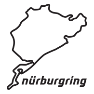

<nav class="d-flex">
  <div class="img-container">
    <a [routerLink]="['']"
      ></a>
  </div>
  <ul [class.navul]="isNavbarCollapsed">
    <li>
      <a [routerLink]="['/pages/driving-experience']">Driving Experience</a>
    </li>
    <li><a [routerLink]="['/cars']">Rent Your Dream Car</a></li>
    <li><a [routerLink]="['/green-hell']">The Green Hell</a></li>
    <li><a [routerLink]="['/faqs']">Faq</a></li>
  </ul>
  <div class="btn-container">
    <button class="navbtn btn" (click)="toggleNavbar()">
      <svg
        xmlns="http://www.w3.org/2000/svg"
        width="16"
        height="16"
        fill="currentColor"
        class="bi bi-chevron-double-down"
        viewBox="0 0 16 16"
      >
        <path
          fill-rule="evenodd"
          d="M1.646 6.646a.5.5 0 0 1 .708 0L8 12.293l5.646-5.647a.5.5 0 0 1 .708.708l-6 6a.5.5 0 0 1-.708 0l-6-6a.5.5 0 0 1 0-.708z"
        />
        <path
          fill-rule="evenodd"
          d="M1.646 2.646a.5.5 0 0 1 .708 0L8 8.293l5.646-5.647a.5.5 0 0 1 .708.708l-6 6a.5.5 0 0 1-.708 0l-6-6a.5.5 0 0 1 0-.708z"
        />
      </svg>
    </button>
    <a
      *ngIf="!(isLoggedIn$ | async)"
      class="btn authlink"
      [routerLink]="['/auth']"
      >Login</a
    >
    <a
      class="btn authlink"
      *ngIf="isLoggedIn$ | async"
      [routerLink]="['/private']"
      ><svg
        xmlns="http://www.w3.org/2000/svg"
        width="20"
        height="20"
        fill="currentColor"
        class="bi bi-person-circle"
        viewBox="0 0 16 16"
      >
        <path d="M11 6a3 3 0 1 1-6 0 3 3 0 0 1 6 0z" />
        <path
          fill-rule="evenodd"
          d="M0 8a8 8 0 1 1 16 0A8 8 0 0 1 0 8zm8-7a7 7 0 0 0-5.468 11.37C3.242 11.226 4.805 10 8 10s4.757 1.225 5.468 2.37A7 7 0 0 0 8 1z"
        /></svg
    ></a>
    <a class="btn btn-warning me-3" [routerLink]="['/backoffice']"
      >Backoffice</a
    >
  </div>
</nav>
